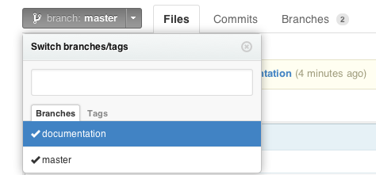

Using Git and Github for revision control¶
Warning
This workshop is deprecated. Please refer to the new Git workshop.
What is Git?¶
Git is a revision control system. It is designed to help you keep track of collections of files which stem from a common source and undergo modifications over time. The files tend to be human generated text. It is very good at managing source code repositories, but it can also be used to manage other things, such as configuration files and text documents. It is not, however, a file backup system.
Git encourages a distributed style of project development. Each contributor to a project has their own complete repository. Changes are shared between repositories by pushing changes to, or pulling changes from other repositories. Collaboration between developers is greatly enhanced by websites such as github, bitbucket and gitorious which provide convenient interfaces to managing multiple repositories.
There are many alternatives to git which each have their pros and cons. Two of the more popular alternatives are:
-
Subversion is particularly suited to a centralised model of development.
-
Mercurial is very similar to Git, but is sometimes considered more user friendly.
Getting help¶
There are lots of resources on the web for learning how to use Git. A popular reference is Pro Git, which is freely available online (http://git-scm.com/book). Another good reference is the book Version Control with Git, by Loeliger and McCullough.
A simple workflow¶
Step 1, create a github account.¶
Create a github account (https://github.com/). Do this step once only (unless you need multiple accounts).
You get unlimited numbers of (world readable) public repositories for free.
Private repositories (that can be shared with selected users) cost money (see https://github.com/plans), but discounts are available for academics.
Step 2, sign into github and create a repository.¶
Sign in to your github account and create a new repository. Do this once for every new project you have.
You will need to provide some information:
-
the repository name
-
a description of the repository
-
choose whether it is public (free) or private (costs money)
-
whether to initialise with a dummy README file (it is useful)
-
whether to provide an initial .gitignore file (probably leave this > out in the beginning)
Step 3, clone your repository to your local computer.¶
Clone your new repository from github to your local computer.
Each repository on github is identified by a URL, which will look like the one below:
Run the command below on your development machine in the directory where you want to keep the repository (of course you should use the actual URL of your own repository, not the one in the example).
$ git clone https://github.com/bjpop/test.git
Cloning into 'test'...
remote: Counting objects: 3, done.
remote: Total 3 (delta 0), reused 0 (delta 0)
Unpacking objects: 100% (3/3), done.
This will create a directory with the same name as your repository (in this example it is called test).
If you change into that directory and list its contents you will see a
.git subdirectory, which is where Git keeps all the data for your
repository. You will also see working copies of the files in the
project. In this example the only such file is README.md which was
created automatically by github when the repository was first created.
(The .md extension on the file suggests that it uses the Markdown
syntax, see https://help.github.com/articles/github-flavored-markdown).
$ cd test
$ ls -a
. .. .git README.md
$ ls .git
branches config description HEAD hooks index info logs objects packed-refs refs
Step 4, commit a file to the repository.¶
Create a new file in the repository on your local computer and commit it to your local repository.
How you create the file is immaterial. You could copy it from somewhere else, create it in a text editor. In this case well make a little python program:
Test that your new file is satisfactory, in this case we test our code:
Check the status of your repository:
$ git status
# On branch master
# Untracked files:
# (use "git add <file>..." to include in what will be committed)
#
# hello.py
nothing added to commit but untracked files present (use "git add" to track)
Notice that git tells you that the new file hello.py is not tracked
(not in the repository).
When you are happy with your file, you can stage it (this is not a commit), but it will cause the file to be tracked:
Note that git uses a two-stage process for committing changes. The first stage is to “stage” your changes. Staged changes appear in the repository index, but are not committed. You can stage many changes together, and even amend or undo previously staged (but not committed) changes. The second stage is to commit the current staged changes to the repository. Committing causes the changes to be reflected in the state of the repository.
Re-check the status of your repository:
$ git status
# On branch master
# Changes to be committed:
# (use "git reset HEAD <file>..." to unstage)
#
# new file: hello.py
#
Now we can see that the changes to hello.py have been staged and are
ready to be committed. Notice that hello.py is no longer untracked.
Commit your changes with a commit message:
$ git commit -m "A little greeting program"
[master b1cce11] A little greeting program
1 files changed, 1 insertions(+), 0 deletions(-)
create mode 100644 hello.py
Re-check the status of your repository:
$ git status
# On branch master
# Your branch is ahead of 'origin/master' by 1 commit.
#
nothing to commit (working directory clean)
Now we see that there a no uncommitted changes in the repository,
however git tells us that our local repository is one commit ahead of
the github version (which it calls origin/master).
Step 5, push your changes to github.¶
Push the commit in your local repository to github (thus synchronising them).
$ git push origin
Username for 'https://github.com': <type your github username>
Password for 'https://<your github username>@github.com':
Counting objects: 4, done.
Delta compression using up to 16 threads.
Compressing objects: 100% (2/2), done.
Writing objects: 100% (3/3), 305 bytes, done.
Total 3 (delta 0), reused 0 (delta 0)
To https://github.com/bjpop/test.git
71a771a..b1cce11 master -> master
Now if you look at your repository on github you should see the file
hello.py has been uploaded, along with its commit time and commit
message.
You can inspect the contents of the file on github by clicking on its name:
Step 6, create a branch in your local repository.¶
You can ask git to tell you about the names of the current branches:
By default your repository starts with a branch called master. The asterisk next to the branch name tells you which is the current branch (at the moment there is only one branch).
The first command above creates a new branch called documentation. The
second command shows us that the new branch has been created, but the
current branch is still master.
To switch to another branch you must check it out:
Lets add a change to our existing hello.py file:
Check the status of the repository (now in the documentation branch):
$ git status
# On branch documentation
# Changes not staged for commit:
# (use "git add <file>..." to update what will be committed)
# (use "git checkout -- <file>..." to discard changes in working
directory)
#
# modified: hello.py
#
no changes added to commit (use "git add" and/or "git commit -a")
Stage the new changes and commit them, and check the status again:
$ git add hello.py
$ git commit -m "Added a comment"
[documentation 9bbe430] Added a comment
1 files changed, 1 insertions(+), 0 deletions(-)
$ git status
# On branch documentation
nothing to commit (working directory clean)
Now we can push the new documentation branch to github:
$ git push origin documentation
Username for 'https://github.com': <your github username>
Password for 'https://<your github username>@github.com':
Counting objects: 5, done.
Delta compression using up to 16 threads.
Compressing objects: 100% (2/2), done.
Writing objects: 100% (3/3), 314 bytes, done.
Total 3 (delta 0), reused 0 (delta 0)
To https://github.com/bjpop/test.git
* [new branch] documentation -> documentation
On github you should be able to see the new branch:

Step 7, merge the changes back into the master¶
branch.
To go back to the master branch you must check it out:
You can confirm that the master branch does not yet have the changes made in the documentation branch:
Notice that the comment is missing.
You can pull the changes in the documentation branch back into the master branch with the merge command:
$ git merge documentation
Updating b1cce11..9bbe430
Fast-forward
hello.py | 1 +
1 files changed, 1 insertions(+), 0 deletions(-)
In this case the merge was easy because there were no conflicts between master and documentation. In this case git automatically updates the tracked files in the current branch.
We can test that the changes have taken place by looking at the contents of hello.py:
Check the status of the master branch:
$ git status
# On branch master
# Your branch is ahead of 'origin/master' by 1 commit.
#
nothing to commit (working directory clean)
Push the changes in the master branch back to github:
$ git push origin master
Username for 'https://github.com': bjpop
Password for 'https://bjpop@github.com':
Total 0 (delta 0), reused 0 (delta 0)
To https://github.com/bjpop/test.git
b1cce11..9bbe430 master -> master
Again you can verify on github that the changes have taken place.
To get an idea of the history of a project you can ask for a log of the commit messages:
$ git log
commit 9bbe430f6e8b70187927b4a70a8402f71b17b426
Author: Bernie <florbitous@gmail.com>
Date: Fri Mar 15 12:30:39 2013 +1100
Added a comment
commit b1cce115fb40a9b11917db7eb73c8295e276bb09
Author: Bernie <florbitous@gmail.com>
Date: Fri Mar 15 12:08:01 2013 +1100
A little greeting program
commit 71a771a86b8116c3f93c99db5416bfa371a6f772
Author: Bernie Pope <florbitous@gmail.com>
Date: Thu Mar 14 17:29:02 2013 -0700